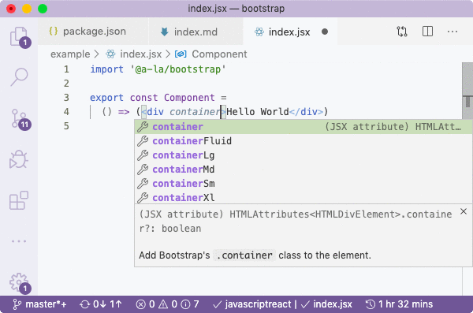
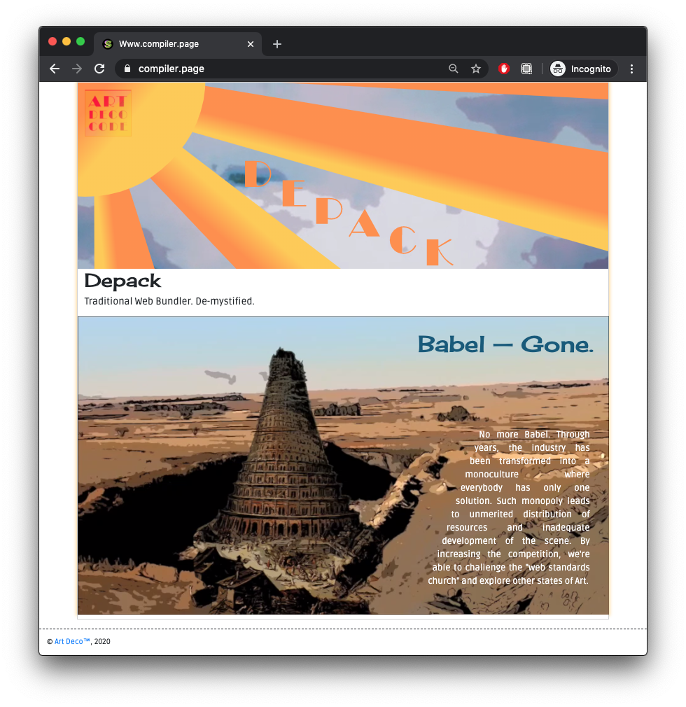

There's a [bug in VSCode](https://github.com/Microsoft/TypeScript/issues/28905) that prevents it from picking up property names with hyphens like `container-fluid` which is so annoying. If not for it, everything would be absolutely perfect. For lunch, I went out to KFC and was doing some more thinking on the way back about work. It's pretty useful to think work-related stuff ;) as it distracts from problems and also enables to come up with solutions for the company. Instead of "why can't I", I'm practising to ask "how can I". It's not even that I might answer this question, but that my subconscious starts to actively direct me towards understanding. After lunch, I decided to start the website for depack, and did some designs on paper, which was then marked up. I found a video on pexels with an explosion and used it for the section that says that there's no more Babel :) By the end of the day, some initial work was done on the website. There was a problem with `@artdeco/snapsvganimator` package where a method wasn't compiled properly, as it used an eval ```js class MovieClip { executeFrameScript(s) { eval(`(function(){${s}}).call(this)`) } } ``` And because the compiler didn't see the reference to `this` (as it's inside the string), it took out the method out of the class scope and made it pure which means `this` wasn't accessible. This was fixed, and animation played fine.
*TODO* - Move animation component into Splendid, or a separate `@artdeco/animation` component. It's a shame `splendid` namespace is taken on NPM and I don't know how to publish components that are not in the core of Splendid. - Add `[]` markdown tickbox.